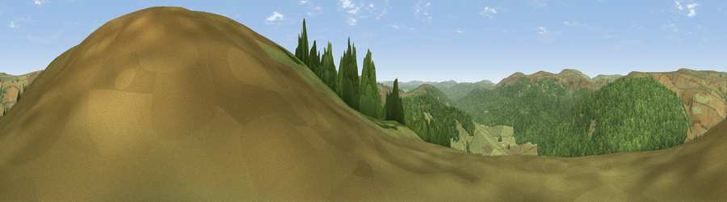

Viewpoint c11972_7368
#17262 in England · top 39% of its area beats it · —Where it is
The exact computed spot (NY 68425 98625). Click the marker for map links.
The view, rendered

A 360° render of this exact spot computed from the terrain model, tree cover and land cover — summer colours, afternoon light, calibrated against photographs of famous viewpoints. Real trees, hedges and buildings will differ in detail.
The panorama
Grey silhouette: terrain skyline in each direction (720 bearings, Earth curvature and refraction included). Dashed green: skyline with trees (+15 m) and buildings (+8 m) as obstacles. Blue strip: how far the ground is visible on each bearing.
Where the view opens
Wedge length = distance to the farthest visible ground on that bearing (vegetation-aware). Rings at 10, 25 and 50 km.
What fills the view
53% woodland · 47% grassland
Angular shares of the visible panorama (visual magnitude), not map area. Landscape diversity 0.30 (0–1 Shannon).
Key numbers
More beautiful places nearby
The staircase of upgrades: each row has a higher view potential than everything closer. Driving times are estimates from straight-line distance, calibrated against real road routing — check an actual route before setting out.
| Place | Direction | Drive | Score |
|---|---|---|---|
| Viewpoint c11990_7394 | ENE · 1 km | ~4 min | 70.2 |
| Wool Meath | NE · 2 km | ~5 min | 70.9 |
| Monkside | S · 4 km | ~9 min | 78.4 |
| Deadwater Fell | WSW · 6 km | ~13 min | 79.4 |
| Viewpoint c11995_7247 | W · 6 km | ~13 min | 82.1 |
| Viewpoint c12273_7856 | ENE · 29 km | ~45 min | 83.7 |
| Viewpoint c12396_7887 | NE · 34 km | ~52 min | 85.7 |
| Viewpoint near Kirknewton | NE · 39 km | ~58 min | 86.1 |
55.28074, -2.49861 · source: screening · position refined by local search. Computed location — check access rights before visiting.